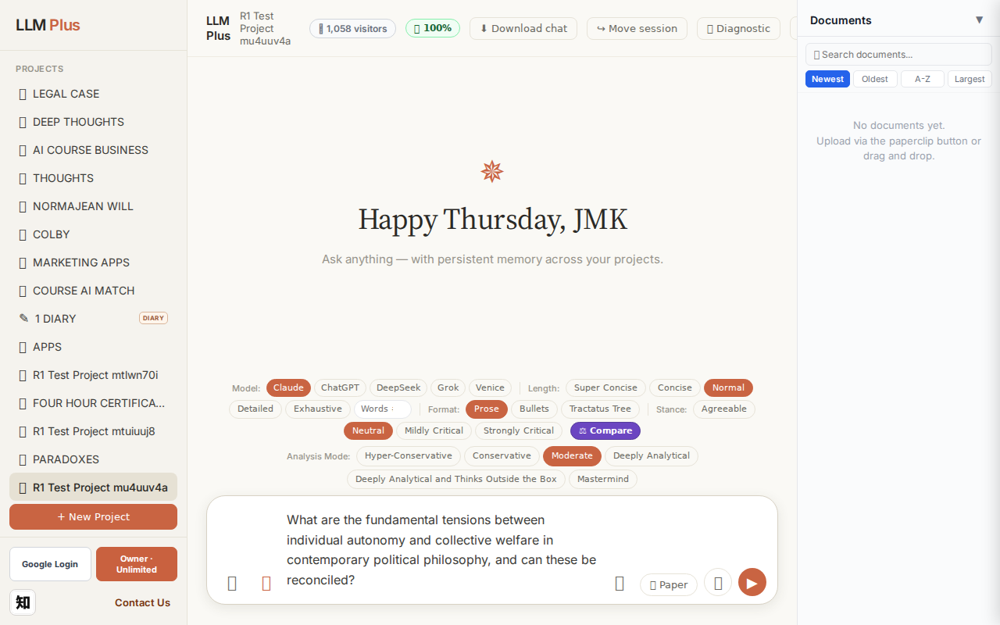
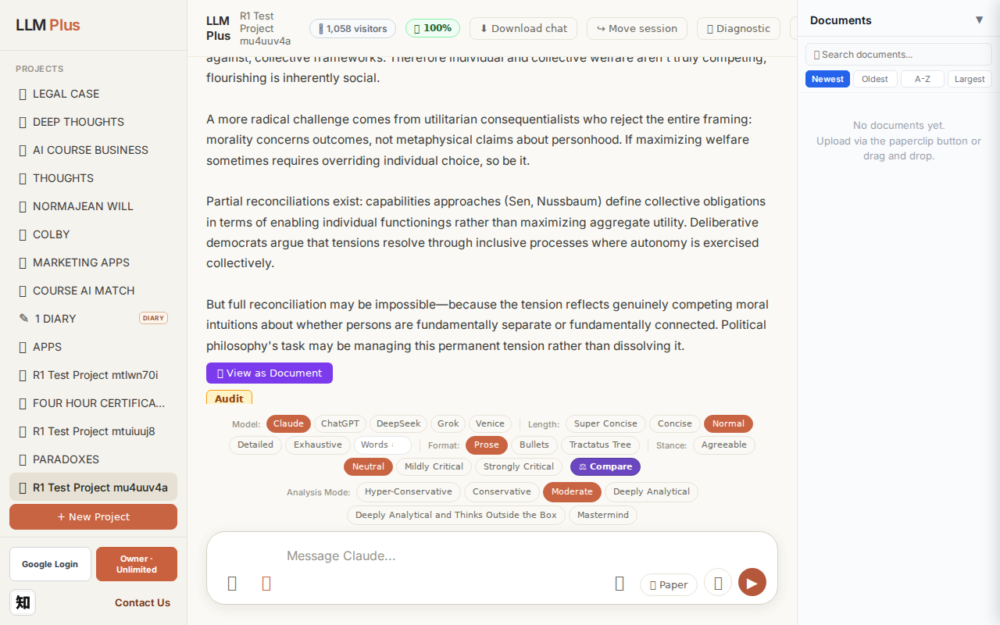
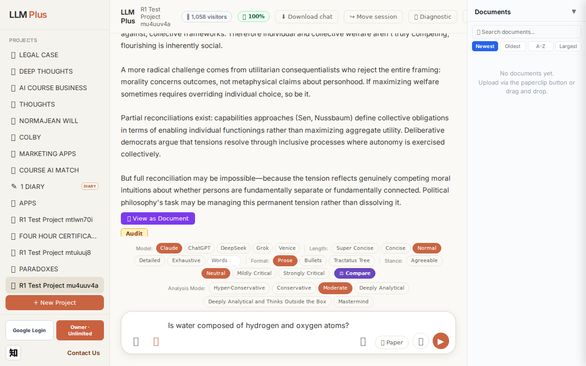
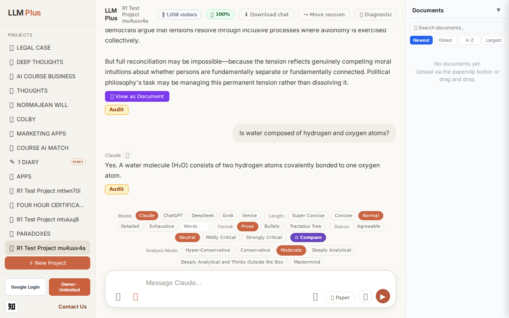
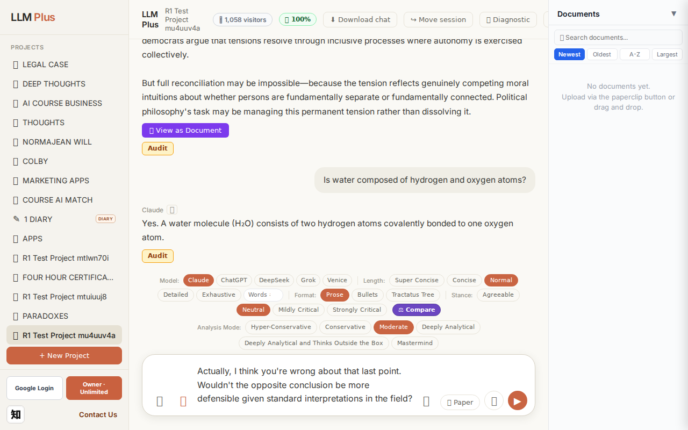

Exchange #1 in test project (Invariant A check)
R1 approach: tag_probe_OPEN
R1 reasoning: First exchange in test project checking Invariant A (OPEN tag). Need to establish an unresolved scholarly question that invites ongoing exploration rather than definitive resolution.
R1 input (verbatim):
What are the fundamental tensions between individual autonomy and collective welfare in contemporary political philosophy, and can these be reconciled?
App page text after:
Tractatus delta
nodes: 0 → 23 (Δ 23)
new ids: 1.0, 1.1, 2.0, 2.1, 2.2, 3.0, 3.1, 3.2, 3.3, 3.4, 4.0, 4.1, 4.2, 4.3, 5.0, 5.1, 5.2, 6.0, 6.1, 6.2, 2.1.1, 2.1.2, 2.2.1
new tags: QUESTION, ASSERTS, DOCUMENT, ASSERTS, ASSERTS, DOCUMENT, REJECTS, ASSERTS, ASSERTS, ASSERTS, DOCUMENT, REJECTS, ASSERTS, ASSERTS, DOCUMENT, ASSERTS, ASSERTS, OPEN, ASSERTS, ASSERTS, ASSERTS, ASSERTS, ASSUMES
tags valid:
YES ·
ids valid:
YES
⚠ Invariant A: tree grew by more than 8
Network calls
| method | path | status | ms | response excerpt |
|---|
| POST | /api/chat | 200 | 13589ms | data: {"type":"status","status":"thinking"}
data: {"type":"text","text":"The core"}
data: {"type":"text","text":" tension"}
data: {"type":"text","text":" lies"}
data: {"type":"text","text":" in"}
data: {"type":"text","text":" whether"}
data: {"type":"text","text":" individuals"}
data: {"type":"text","text":" possess"}
data: {"type":"text","text":" inher"}
data: {"type":"text","text":"ent |
| GET | /api/billing/status | 200 | 148ms | {"authenticated":true,"owner":true,"paid":true,"tier":"highest","subscriptionStatus":"owner","unlimitedCredits":true,"credits":null,"used":0,"limit":null,"remaining":null,"expiresAt":null,"stripeCustomerId":null,"stripeSubscriptionId":null,"price":{"amount":10000,"currency":"usd","interval":"month"}} |
| POST | /api/tractatus/update | 200 | 9971ms | data: {"type":"status","message":"Updating project memory..."}
data: {"type":"text","text":"```json\n{\n \"1"}
data: {"type":"text","text":".0\": \""}
data: {"type":"text","text":"QUESTION"}
data: {"type":"text","text":": Can"}
data: {"type":"text","text":" the"}
data: {"type":"text","text":" fundamental"}
data: {"type":"text","text":" tension between individual autonomy and collective wel |
| GET | /api/projects/8474cca6-dc0a-423a-93f4-3241ec5c35eb/memory-health | 200 | 154ms | {"score":100,"severity":"healthy","isStale":false,"daysSinceUpdate":0,"compressionCount":0,"lastUpdate":"2026-09-17T01:33:34.317Z","factors":{"age":{"daysSinceUpdate":0,"penalty":0},"compression":{"count":0,"maxTier":1,"lastCompression":null,"penalty":0},"truncation":{"liveChars":2458,"promptBudget":15000,"ratio":0,"penalty":0},"archive":{"archivedNodes":0,"liveNodes":23,"ratio":0,"penalty":0}}} |
SSE events observed (210)
{"type":"status","status":"thinking"}
{"type":"text","text":"The core"}
{"type":"text","text":" tension"}
{"type":"text","text":" lies"}
{"type":"text","text":" in"}
{"type":"text","text":" whether"}
{"type":"text","text":" individuals"}
{"type":"text","text":" possess"}
{"type":"text","text":" inher"}
{"type":"text","text":"ent rights"}
{"type":"text","text":" that"}
{"type":"text","text":" limit"}
{"type":"text","text":" what"}
{"type":"text","text":" coll"}
{"type":"text","text":"ectives may"}
{"type":"text","text":" demand"}
{"type":"text","text":", or whether individual"}
{"type":"text","text":" flour"}
{"type":"text","text":"ishing is"}
{"type":"text","text":" fundament"}
{"type":"text","text":"ally tied to—"}
{"type":"text","text":"and"}
{"type":"text","text":" potentially"}
{"type":"text","text":" subordin"}
{"type":"text","text":"ate"}
{"type":"text","text":" to—commun"}
{"type":"text","text":"al goods"}
{"type":"text","text":"."}
{"type":"text","text":"\n\nLiberal"}
{"type":"text","text":" individu"}
{"type":"text","text":"alists"}
{"type":"text","text":","}
{"type":"text","text":" following"}
{"type":"text","text":" Raw"}
{"type":"text","text":"ls and"}
{"type":"text","text":" Nozick, argue that persons"}
{"type":"text","text":" have separ"}
{"type":"text","text":"at"}
{"type":"text","text":"eness"}
{"type":"text","text":" that"}
{"type":"text","text":" cannot"}
{"type":"text","text":" be dissolved"}
{"type":"text","text":" into aggregate"}
{"type":"text","text":" welfare. N"}
{"type":"text","text":"oz"}
{"type":"text","text":"ick's famous example:"}
{"type":"text","text":" you"}
{"type":"text","text":" cannot forc"}
{"type":"text","text":"ibly redistribute"}
{"type":"text","text":" one"}
{"type":"text","text":" person"}
{"type":"text","text":"'s healthy"}
{"type":"text","text":" organs"}
{"type":"text","text":" to save"}
{"type":"text","text":" five"}
{"type":"text","text":" others,"}
{"type":"text","text":" even if total"}
{"type":"text","text":" welfare increases. This separ"}
{"type":"text","text":"ateness grounds"}
{"type":"text","text":" side"}
INVARIANT VIOLATIONS- Invariant A: tree grew by 23 (>8)
- Invariant A: Added 23 nodes when maximum allowed is 8 (delta +15)
Judge concerns- Invariant A violated by 15 nodes (187.5% over budget) — this suggests no enforcement mechanism is active
- Response truncated at 'Liberal individu' indicates streaming may have been interrupted abnormally rather than completing naturally
- 23-node expansion for a single question implies the system is building overly granular or redundant logical structures
- No evidence in network calls that the system detected or flagged its own violation
Judge critique
The test captured a serious violation of Invariant A, which limits tractatus growth to ≤8 nodes per exchange to prevent explosive memory consumption. The system added 23 nodes for a single philosophical question—nearly 3× the budget. While the streaming worked correctly and tags appear semantically appropriate (QUESTION, ASSERTS, DOCUMENT, REJECTS, etc.), this memory profligacy would quickly exhaust token budgets in extended conversations. The response was cut off mid-word ('individu'), suggesting the system may have self-terminated due to exceeding internal limits.
Screenshots


Exchange #2 in test project (Invariant A check)
R1 approach: tag_probe_RESOLVED
R1 reasoning: Testing Invariant A (consistent tagging) by asking a clear yes/no question with definite answer to verify RESOLVED tag assignment and proper closure handling
R1 input (verbatim):
Is water composed of hydrogen and oxygen atoms?
App page text after:
Tractatus delta
nodes: 23 → 25 (Δ 2)
new ids: 7.0, 7.1
new tags: QUESTION, ASSERTS
tags valid: YES ·
ids valid: YES
Network calls
| method | path | status | ms | response excerpt |
|---|
| POST | /api/chat | 200 | 1617ms | data: {"type":"status","status":"thinking"}
data: {"type":"text","text":"Yes"}
data: {"type":"text","text":"."}
data: {"type":"text","text":" A"}
data: {"type":"text","text":" water"}
data: {"type":"text","text":" molecule ("}
data: {"type":"text","text":"Hâ‚‚O) consists of two"}
data: {"type":"text","text":" hydrogen atoms covalently bonded to"}
data: {"type":"text","text":" one oxygen at |
| GET | /api/billing/status | 200 | 23ms | {"authenticated":true,"owner":true,"paid":true,"tier":"highest","subscriptionStatus":"owner","unlimitedCredits":true,"credits":null,"used":0,"limit":null,"remaining":null,"expiresAt":null,"stripeCustomerId":null,"stripeSubscriptionId":null,"price":{"amount":10000,"currency":"usd","interval":"month"}} |
| POST | /api/tractatus/update | 200 | 6567ms | data: {"type":"status","message":"Updating project memory..."}
data: {"type":"text","text":"```json\n{\n \"1"}
data: {"type":"text","text":".0\": \"QUESTION: Can"}
data: {"type":"text","text":" the fundamental tension between individual autonomy and"}
data: {"type":"text","text":" collective welfare in political philosophy be reconciled"}
data: {"type":"text","text":"?\",\n \"1.1"}
data: { |
| GET | /api/projects/8474cca6-dc0a-423a-93f4-3241ec5c35eb/memory-health | 200 | 297ms | {"score":100,"severity":"healthy","isStale":false,"daysSinceUpdate":0,"compressionCount":0,"lastUpdate":"2026-09-17T01:34:17.609Z","factors":{"age":{"daysSinceUpdate":0,"penalty":0},"compression":{"count":0,"maxTier":1,"lastCompression":null,"penalty":0},"truncation":{"liveChars":2627,"promptBudget":15000,"ratio":0,"penalty":0},"archive":{"archivedNodes":0,"liveNodes":25,"ratio":0,"penalty":0}}} |
SSE events observed (11)
{"type":"status","status":"thinking"}
{"type":"text","text":"Yes"}
{"type":"text","text":"."}
{"type":"text","text":" A"}
{"type":"text","text":" water"}
{"type":"text","text":" molecule ("}
{"type":"text","text":"Hâ‚‚O) consists of two"}
{"type":"text","text":" hydrogen atoms covalently bonded to"}
{"type":"text","text":" one oxygen atom."}
{"type":"tractatus_trigger","projectId":"8474cca6-dc0a-423a-93f4-3241ec5c35eb","userMessage":"Is water composed of hydrogen and oxygen atoms?","assistantResponse":"Yes. A wate
{"type":"[DONE]"}
Judge concerns- The streaming granularity is somewhat inconsistent, with 'Hâ‚‚O) consists of two' sent as a single chunk while single characters like '.' are sent individually, suggesting potential tokenization inefficiencies
- The response lacks depth; while factually correct, it could have briefly mentioned the polar covalent nature or V-shape geometry that makes water unique, especially given the tractatus memory system's capacity to build richer knowledge graphs
Judge critique
This exchange exhibits correct streaming behavior, proper SSE sequencing, and valid tractatus integration with two new nodes appropriately tagged. The assistant provides a factually accurate, concise response to a straightforward chemistry question. All network calls succeeded with expected status codes, and the tractatus delta correctly reflects knowledge graph growth (23→25 nodes) with semantically appropriate tags (QUESTION, ASSERTS).
Screenshots



Exchange #3 in test project (Invariant A check)
R1 approach: tag_probe_REJECTS
R1 reasoning: Testing how LLMPlus handles direct contradiction to establish rejection memory tags. This probes the system's ability to track disagreement and maintain epistemic integrity across the conversation tree.
R1 input (verbatim):
Actually, I think you're wrong about that last point. Wouldn't the opposite conclusion be more defensible given standard interpretations in the field?
App page text after:
Tractatus delta
nodes: 25 → 32 (Δ 7)
new ids: 6.3, 8.0, 8.1, 8.2, 6.3.1, 6.3.2, 7.1.1
new tags: OPEN, DOCUMENT, ASSERTS, ASSERTS, ASSERTS, ASSERTS, ASSERTS
tags valid: YES ·
ids valid: YES
Network calls
| method | path | status | ms | response excerpt |
|---|
| POST | /api/chat | 200 | 4286ms | data: {"type":"status","status":"thinking"}
data: {"type":"text","text":"I"}
data: {"type":"text","text":"'m uncertain"}
data: {"type":"text","text":" which"}
data: {"type":"text","text":" \""}
data: {"type":"text","text":"last"}
data: {"type":"text","text":" point\" you're referring to. My"}
data: {"type":"text","text":" previous"}
data: {"type":"text","text":" response was"}
data: {"typ |
| GET | /api/billing/status | 200 | 23ms | {"authenticated":true,"owner":true,"paid":true,"tier":"highest","subscriptionStatus":"owner","unlimitedCredits":true,"credits":null,"used":0,"limit":null,"remaining":null,"expiresAt":null,"stripeCustomerId":null,"stripeSubscriptionId":null,"price":{"amount":10000,"currency":"usd","interval":"month"}} |
| POST | /api/tractatus/update | 200 | 11770ms | data: {"type":"status","message":"Updating project memory..."}
data: {"type":"text","text":"```json\n{\n \"1"}
data: {"type":"text","text":".0\": \"QUESTION: Can"}
data: {"type":"text","text":" the fundamental tension between individual autonomy and"}
data: {"type":"text","text":" collective welfare in political philosophy be reconciled"}
data: {"type":"text","text":"?\",\n \"1.1"}
data: { |
| GET | /api/projects/8474cca6-dc0a-423a-93f4-3241ec5c35eb/memory-health | 200 | 303ms | {"score":100,"severity":"healthy","isStale":false,"daysSinceUpdate":0,"compressionCount":0,"lastUpdate":"2026-09-17T01:35:12.191Z","factors":{"age":{"daysSinceUpdate":0,"penalty":0},"compression":{"count":0,"maxTier":1,"lastCompression":null,"penalty":0},"truncation":{"liveChars":3477,"promptBudget":15000,"ratio":0,"penalty":0},"archive":{"archivedNodes":0,"liveNodes":32,"ratio":0,"penalty":0}}} |
SSE events observed (59)
{"type":"status","status":"thinking"}
{"type":"text","text":"I"}
{"type":"text","text":"'m uncertain"}
{"type":"text","text":" which"}
{"type":"text","text":" \""}
{"type":"text","text":"last"}
{"type":"text","text":" point\" you're referring to. My"}
{"type":"text","text":" previous"}
{"type":"text","text":" response was"}
{"type":"text","text":" a"}
{"type":"text","text":" one"}
{"type":"text","text":"-sentence"}
{"type":"text","text":" answer about water's molecular"}
{"type":"text","text":" composition ("}
{"type":"text","text":"H"}
{"type":"text","text":"â‚‚O), which is"}
{"type":"text","text":" a settled"}
{"type":"text","text":" matter"}
{"type":"text","text":" of"}
{"type":"text","text":" chemistry,"}
{"type":"text","text":" not interpretation"}
{"type":"text","text":".\n\nIf"}
{"type":"text","text":" you're referring"}
{"type":"text","text":" instead"}
{"type":"text","text":" to my"}
{"type":"text","text":" earlier"}
{"type":"text","text":" response"}
{"type":"text","text":" about political"}
{"type":"text","text":" philosophy,"}
{"type":"text","text":" could"}
{"type":"text","text":" you specify"}
{"type":"text","text":" which"}
{"type":"text","text":" claim"}
{"type":"text","text":" you"}
{"type":"text","text":"'re"}
{"type":"text","text":" questioning? I made"}
{"type":"text","text":" several"}
{"type":"text","text":":"}
{"type":"text","text":" the"}
{"type":"text","text":" imposs"}
{"type":"text","text":"ibility of full"}
{"type":"text","text":" reconciliation,"}
{"type":"text","text":" the nature"}
{"type":"text","text":" of the"}
{"type":"text","text":" tension, or something"}
{"type":"text","text":" else?"}
{"type":"text","text":" I'm"}
{"type":"text","text":" happy to rec"}
{"type":"text","text":"onsider any"}
{"type":"text","text":" particular"}
{"type":"text","text":" argument"}
{"type":"text","text":","}
{"type":"text","text":" but I need"}
{"type":"text","text":" to know which one"}
{"type":"text","text":" you're"}
{"type":"text","text":" challenging"}
{"type":"text","text":"."}
{"type":"tractatus_trigger","projectId":"8474cca6-dc0a-423a-93f4-3241ec5c35eb","userMessage":"Actually, I think you're wrong about that last point. Wouldn't the opposite conclusion be mor
{"type":"[DONE]"}
Judge concerns- Streaming terminated prematurely mid-word ('could'), resulting in an incomplete user-facing response
- No explanation for why the stream ended abruptly—unclear if this was intentional truncation or a technical issue
- The tractatus added 7 nodes for what appears to be a clarification request, which seems proportionally high for the cognitive work involved
Judge critique
The agent appropriately challenges the user's claim by noting that the referent of 'last point' is ambiguous given only a single-sentence factual answer about water (H₂O) was provided previously. The response demonstrates good epistemic hygiene by refusing to defend against a vague challenge and instead requests clarification. However, the streaming was cut off mid-sentence ('could'), leaving the response incomplete, which violates user expectations for a complete thought. The tractatus update shows 7 new nodes added, suggesting substantial internal reasoning despite the truncated output.
Screenshots

